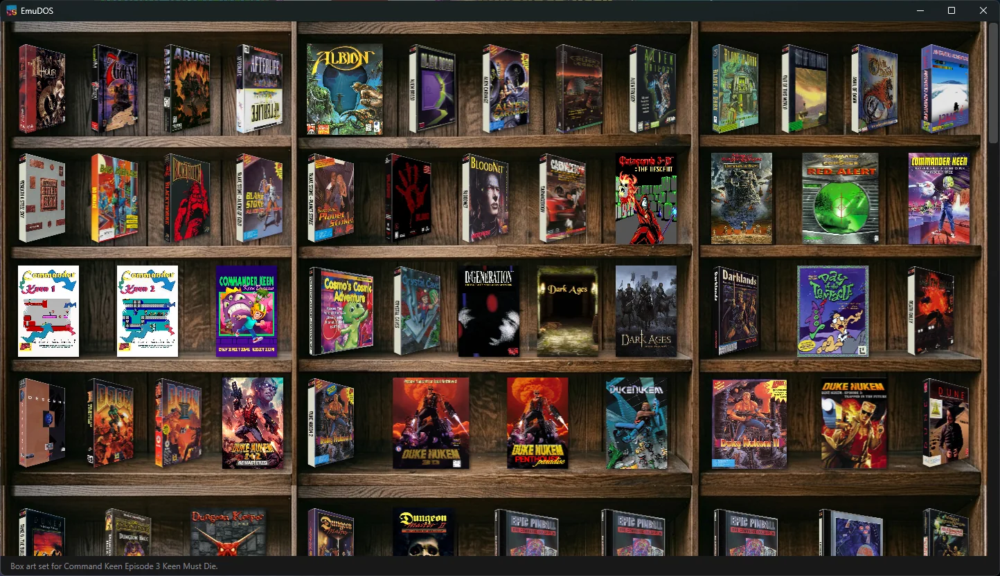
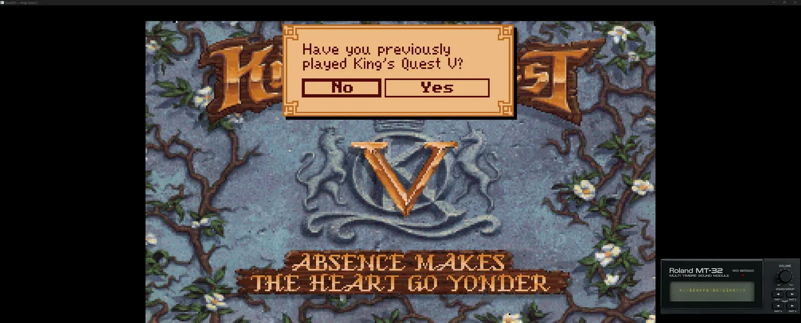

Drop a game onto a wooden shelf and it just plays — the right CPU speed, the right sound card, the right program to launch, all figured out for you. No .conf, no cycles to tune, no setup.
Free & open source · Windows 10/11 · Linux (.deb / tar.gz) · powered by the DOSBox Pure core


Some of the best DOS soundtracks were written for the Roland MT-32. Drop in your MT-32 or CM-32L ROMs and those games play with real MT-32 music — complete with the module's iconic dot-matrix LCD scrolling its messages on screen as you play. Sound Blaster, AdLib and General MIDI are all covered too.
EmuDOS.exe, self-contained, no install; on Linux install the .deb or extract the tar.gz..zip or disc image onto the window. It lands on the shelf with art.EmuDOS is young software, built and tested by a small group. It plays a lot of games well today, but expect rough edges as it grows. The Linux port is newer and may trail the Windows app on a few features — see its GitHub page for current status. Bug reports and ideas are welcome on GitHub. EmuDOS downloads the DOSBox Pure core at runtime and never distributes copyrighted game files, BIOS or MT-32 ROMs — you supply your own.